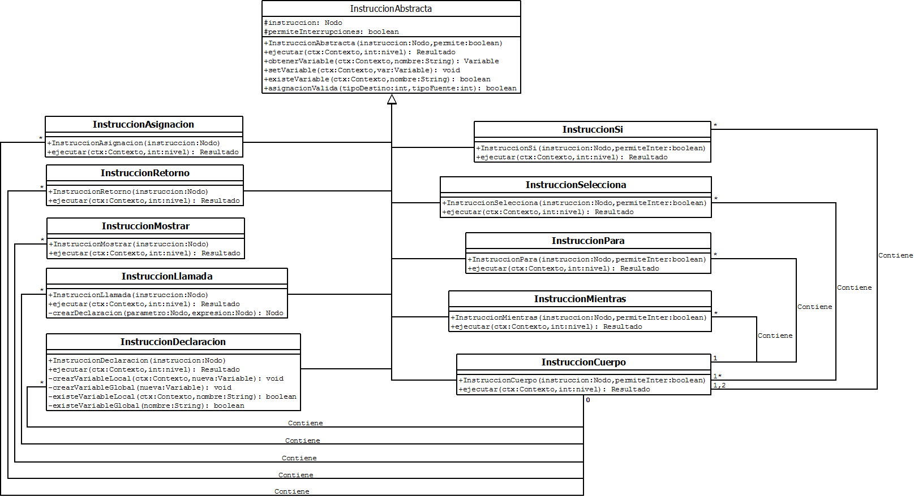

Si tanto un intérprete como un compilador utilizan un analizador léxico, un analizador sintáctico y muchas otras cosas en común ¿qué los diferencia? un compilador, genera código objeto y ese proceso se detiene con la presencia de errores, mientras que un intérprete no genera código objeto y ejecuta las acciones independientemente si la entrada cuenta con errores. Ejemplos de algunos lenguajes compilados son Java, C#, C; Mientras que en el bando de los lenguajes intérpretados están lenguajes como php, Javascript, Ruby, entre otros. Con las diferencias claras, ¿qué necesitás para crear un intérprete?
El diagrama de componentes que a continuación se presenta muestra la relacion que existe entre los paquetes, a grandes rasgos podemos definir el contenido de cada paquete de la siguiente forma.
La resolución de expresiones se realiza utilizando un objeto Resultado entre métodos y evaluando los tipos de cada nodo del AST, iniciando con una instancia de Expresion que recibirá como nodo hijo el nodo que se desea resolver.
// Así inicia la resolución de una expresión
// Donde ctx es el objeto Contexto que almacena las variables locales
Expresion exp = new Expresion(nodoExp);
Resultado res = exp.resolver(ctx);
De esta manera el método ejecutar de la clase Expresion realiza la comparación del rol del nodo que desea resolver y si es, por ejemplo un nodo de rol ARITMETICO, se crea una nueva instancia de ExpresionAritmetica y se le envían como parámetros en el contructor los hijos 0 y 1 del nodo principal de la actual instancia, además del operador que está almacenado en el atributo subrol del nodo principal.
// Así se resolvería una expresión aritmética
// Donde ctx es el objeto Contexto que almacena las variables locales
ExpresionAritmetica exp = new ExpresionAritmetica(nodo.getHijo(0), nodo.getHijo(1), nodo.getSubrol());
Resultado res = exp.resolver(ctx);
Así las expresiones se resuelven llamandose entre ellas de forma recursiva hasta llegar a un nodo hoja, que podrián ser valores nativos, identificadores de variables o una llamada a métodos.
Este es el diagrama de clases en donde se ejemplifica como es que las clases se dividen según el tipo de operación y como todas comparten cierto comportamiento en común se asocia una clase padrea a todas, esta clase padre es la clase ExpresionAbstracta.
Para las instrucciones se sigue un patrón similar que con las expresiones, todas las instrucciones comparten cierto comportamiento en común, entonces ese comportamiento en común se agrupa en la clase InstruccionAbstracta, de allí en más todas las clases que heredan de la clase abstracta deben realizar su propia implementación del método ejecutar(Contexto ctx, int nivel) que devuelve un objeto Resultado. Es por medio del objeto Resultado que tanto instrucciones como expresiones comparten su funcionalidad, instrucciones depende de expresiones, por ejemplo al momento de encontrar una instrucción de tipo Retorno, de forma paralela expresiones depende de instrucciones al encontrar una operación que involucra una llamada a métodos.

Dentro de las instrucciones, la instrucción que orquesta el funcionamiento de todas las demás es la clase InstruccionCuerpo ya que en ella se analizan los roles de cada instrucción (proveniente del AST) y se van realizando instancias de cada clase según su rol.
Como en los intérpretes no existe una tabla de símbolos como tal, su lugar lo ocupa un objeto al que he decidido llamar Contexto, cuya función es almacenar las variables que existen a lo largo de la ejecución del programa. Este óbjeto debe ser limpiado de las variables que se han declarado en cierto ámbito cuando el foco de la ejecución abandona dicho ámbito.